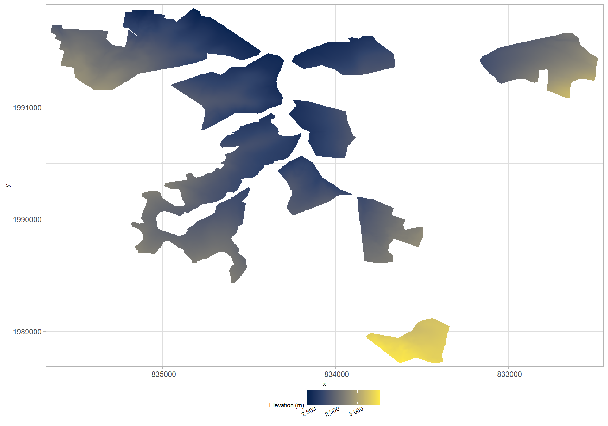
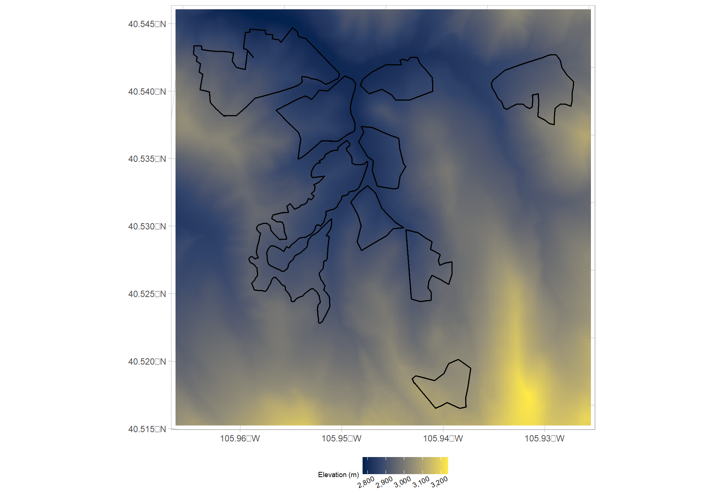
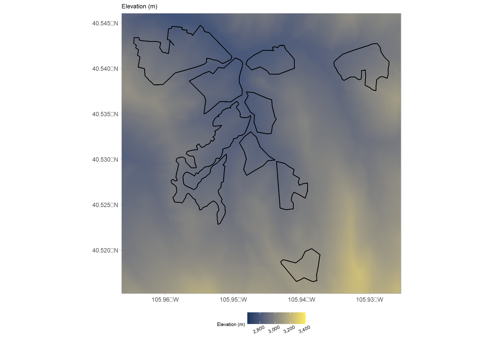
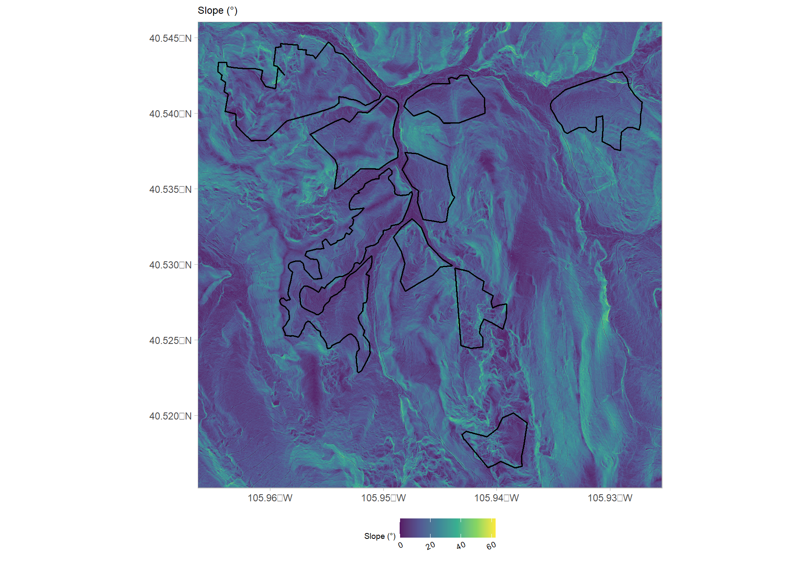
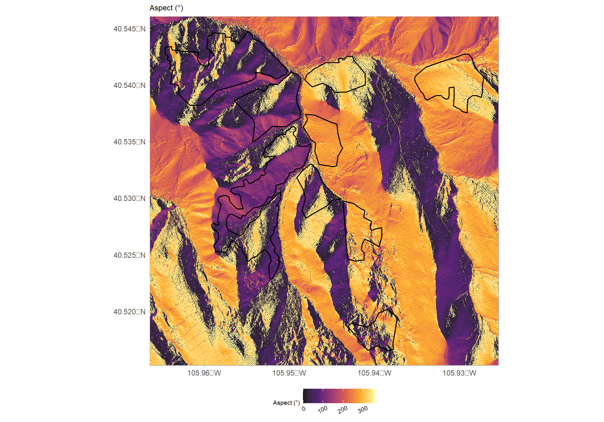
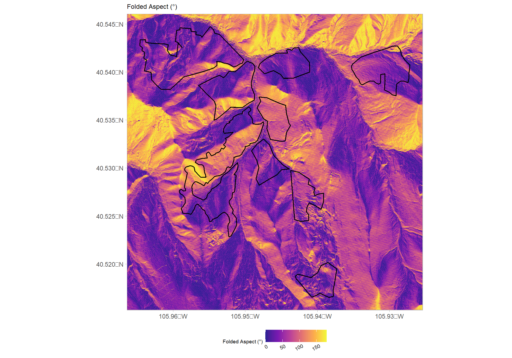
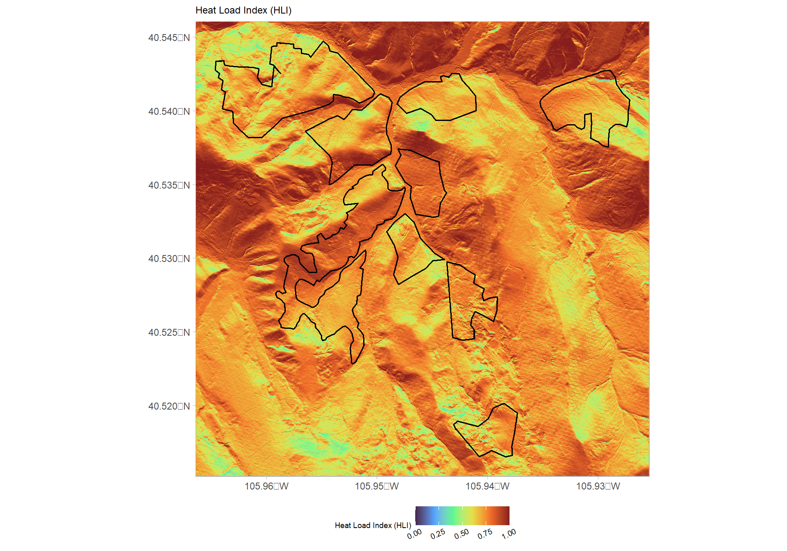

Chapter 2 Data Preparation
# turn off the s2 processing
## https://stackoverflow.com/questions/68478179/how-to-resolve-spherical-geometry-failures-when-joining-spatial-data
sf::sf_use_s2(FALSE)
# set crs
my_crs <- 5070 # EPSG:5070 = NAD83/Conus Albers (units = meters); EPSG:4326 = WGS 84 (units = dd); EPSG:4269 = NAD83 (units = dd)2.1 Explore Data
The raster elevation data sent by Mark Melham (Mark.Melham@colostate.edu) was in a geodatabase (.gdb). GDAL uses the OpenFileGDB driver, which can only read vector data sources (here). Have to open .gdb in Arc and export as GeoTIFF (.tif).
# read in elevation data exported from Arc as .tif
elev_temp <- terra::rast("../data/ground_elev_reproj.tif")
# check values
terra::summary(elev_temp)
# appears that elevation is in ft...convert to m
elev_temp <- elev_temp/3.2808
# map
elev_temp |>
terra::aggregate(fact=10, fun="mean") |>
as.data.frame(xy=T) |>
dplyr::rename(elevation=3) |>
ggplot() +
geom_tile(mapping = aes(x=x,y=y,fill=elevation)) +
scale_fill_viridis_c(option = "cividis", label = scales::comma) +
scale_x_continuous(expand = c(0.01, 0.01)) +
scale_y_continuous(expand = c(0.01, 0.01)) +
labs(
fill = "Elevation (m)"
) +
theme_light() +
theme(
legend.position = "bottom"
, legend.direction = "horizontal"
, legend.margin = margin(0,0,0,0)
, legend.box.margin = margin(-7,0,2,0)
, legend.text = element_text(size = 7, angle = 25, hjust = 0.7)
, legend.title = element_text(size = 7)
, axis.title = element_text(size = 7)
, plot.subtitle = element_text(size=9)
)
This elevation data is cropped to the unit boundaries. Need to get elevation raster extending outside unit boundaries to avoid edge effects when aggregating HLI values to a more coarse resolution (e.g. from 1m to 30m).
Export treatment area bounding box to obtain USGS 3DEP 1m elevation data product.
# set reproj crs
reproject_crs <- terra::crs(elev_temp)
# export
terra::ext(elev_temp) |>
terra::as.polygons() |>
sf::st_as_sf() |>
sf::st_set_crs(reproject_crs) |>
sf::st_buffer(dist = 500) |>
sf::st_bbox() |>
sf::st_as_sfc() |>
sf::st_write("../data/unit_bbox.shp", append = F)Upload this bounding box shape to Google Earth Engine and execute this script to get full USGS 3DEP 1m elevation data.
2.2 Treatment Area
I don’t have the unit polygon data. Creating it from the boundary of the elevation raster which was cropped to the units.
trt_units <- elev_temp |>
terra::classify(rcl = (c(-Inf, Inf, 1) |> matrix(ncol=3, byrow=TRUE)) ) |>
terra::as.polygons(trunc=TRUE, dissolve=TRUE) |>
sf::st_as_sf() |>
sf::st_set_crs(reproject_crs)2.3 Load Elevation Data
USGS 3DEP 1m resolution elevation data utilized for HLI calculation.
#######################################################
#######################################################
# read elevation data
#######################################################
#######################################################
elev <- terra::rast("../data/csf_ascc_3dep1m.tif") |>
terra::crop(
trt_units |>
sf::st_buffer(150) |>
sf::st_bbox() |>
sf::st_as_sfc()
)
# plot
ggplot() +
geom_raster(
data =
elev |>
terra::aggregate(fact=10, fun="mean") |>
as.data.frame(xy=T) |>
dplyr::rename(elev=3)
, mapping = aes(x=x,y=y,fill=elev)
) +
geom_sf(data = trt_units, alpha = 0, lwd = 0.6, color = "black") +
scale_fill_viridis_c(option = "cividis", label = scales::comma) +
scale_x_continuous(expand = c(0.01, 0.01)) +
scale_y_continuous(expand = c(0.01, 0.01)) +
labs(
fill = "Elevation (m)"
, x = ""
, y = ""
) +
theme_light() +
theme(
legend.position = "bottom"
, legend.direction = "horizontal"
, legend.margin = margin(0,0,0,0)
, legend.box.margin = margin(-7,0,2,0)
, legend.text = element_text(size = 7, angle = 25, hjust = 0.7)
, legend.title = element_text(size = 7)
, axis.title = element_text(size = 7)
, plot.subtitle = element_text(size=9)
)
2.4 Aspect and HLI
Aspect of a slope (the direction or azimuth that a slope faces) strongly influences potential direct incident radiation and temperature. Untransformed, aspect is a poor variable for quantitative analysis, since 1° is adjacent to 360° – the numbers are very different even though the aspect is about the same. The following equation for Heat Load Index (HLI) rescales aspect to a scale of zero to one, with zero being the coolest slope (northeast) and one being the warmest slope (southwest). HLI is a proxy for aspect-driven solar heating.
\[ \textrm{Heat load index} = \frac{1 - \cos(\theta - 45)}{2} \] where \(\theta\) = aspect in degrees east of north. While this and related equations are useful, they do not consider the steepness of the slope. For example, a 1° south-facing slope would receive the same heat load index as a 30° south-facing slope, even though the latter will be considerably warmer.
HLI calculations have been developed which combine slope, folded aspect (i.e., “southwestness”), and latitude to estimate terrain-driven solar heating at a given location (McCune & Keon 2002: eq. 2). To calculate HLI, we used equation 2 of McCune & Keon 2002: eq. 2. Following calculation, we aggregated these data to each group selection boundary (median HLI of ~6.8m pixels). Higher values of HLI are typical on steep southwesterly slopes, while low values are common on steep northeasterly slopes. Moderate values are common in flatter terrain and on northwesterly and southeasterly aspects.
Aspect must first be “folded” about the north-south line, rescaling 0-360° to 0-180°, such that NE = NW, E = W, etc:
\[ \textrm{Folded aspect°} = 180° \, - \, | Aspect° – 180° | \]
# convert elevation raster from terra to stars
elev_stars <- stars::st_as_stars(elev) |>
setNames(c("elev"))
# extract latitude degrees from stars object
lats <- sf::st_coordinates(elev_stars) |>
sf::st_as_sf(coords = c("x", "y"), crs = my_crs) |>
sf::st_transform(crs = 4326) |>
sf::st_coordinates() |>
dplyr::as_tibble() |>
setNames(c("longitude","latitude")) |>
dplyr::select(latitude)
gc()
# hli function
# This equation returns ln(Rad, MJ · cm–2 · yr–1). It can
# be returned to an arithmetic scale with the EXP(x)
# function.
hli_fn <- function(slope_rad, folded_aspect_rad, latitude_rad){
exp(
(-1*1.236) +
1.350*cos(latitude_rad)*cos(slope_rad) +
(-1*1.376)*cos(folded_aspect_rad)*sin(slope_rad)*sin(latitude_rad) +
(-1*0.331)*sin(latitude_rad)*sin(slope_rad) +
0.375*sin(folded_aspect_rad)*sin(slope_rad)
)
}
# calculate slope and aspect from DEM
topo <- c(
elev_stars
, starsExtra::slope(elev_stars)
, starsExtra::aspect(elev_stars)
) |>
setNames(
c("elev", "slope_deg", "aspect_deg")
) |>
dplyr::mutate(
slope_rad = pracma::deg2rad(as.numeric(slope_deg))
, aspect_rad = pracma::deg2rad(as.numeric(aspect_deg))
, folded_aspect_deg = 180 - abs(as.numeric(aspect_deg)-180)
, folded_aspect_rad = pracma::deg2rad(folded_aspect_deg)
, latitude_deg = lats$latitude
, latitude_rad = pracma::deg2rad(as.numeric(latitude_deg))
, hli = dplyr::case_when(
hli_fn(slope_rad, folded_aspect_rad, latitude_rad) > 1 ~ 1
, hli_fn(slope_rad, folded_aspect_rad, latitude_rad) < 0 ~ 0
, TRUE ~ hli_fn(slope_rad, folded_aspect_rad, latitude_rad)
)
)2.4.1 Topography maps
# map
vars <- c(
"elev"
, "slope_deg"
, "aspect_deg"
, "folded_aspect_deg"
, "hli"
)
vars_title <- c(
"Elevation (m)"
, "Slope (\u00B0)"
, "Aspect (\u00B0)"
, "Folded Aspect (\u00B0)"
, "Heat Load Index (HLI)"
)
vars_color <- c(
"cividis"
, "viridis"
, "inferno"
, "plasma"
, "turbo"
)
vars_llim <- c(
min(topo$elev, na.rm=T)*.95
, 0
, 0
, 0
, 0
)
vars_ulim <- c(
max(topo$elev, na.rm=T)*1.05
, max(as.numeric(topo$slope_deg), na.rm=T)*1.05
, 360
, 180
, 1
)
# plts <- list()
plt_fn <- function(x){
(
ggplot() +
stars::geom_stars(data = (topo |> dplyr::select(vars[x]))[]) +
scale_fill_viridis_c(option = vars_color[x], alpha = 0.9, na.value = "transparent"
, limits = c(vars_llim[x], vars_ulim[x])
, label = scales::comma
) +
geom_sf(data = trt_units, alpha = 0, lwd = 0.6, color = "black") +
labs(
subtitle = vars_title[x]
, fill = vars_title[x]
, x = ""
, y = ""
) +
scale_x_continuous(expand = c(0, 0)) +
scale_y_continuous(expand = c(0, 0)) +
theme_light() +
theme(
legend.position = "bottom"
, legend.direction = "horizontal"
, legend.margin = margin(0,0,0,0)
, legend.box.margin = margin(-7,0,2,0)
, legend.text = element_text(size = 7, angle = 25, hjust = 0.7)
, legend.title = element_text(size = 7)
, axis.title = element_text(size = 7)
, plot.subtitle = element_text(size=9)
)
)
}
# print all plots
c(1:length(vars)) |>
purrr::map(plt_fn)
2.5 HLI at different resolutions
Aggregate HLI to different resolutions for use in selecting areas
# create output dir
if(!dir.exists("../data/output/")){
dir.create("../data/output/")
}
# function to map and output data
hli_agg_fn <- function(my_res = 50) {
# base hli data and aggregate
hli <- terra::rast((topo |> dplyr::select(hli))[]) |>
terra::aggregate(fact=my_res, fun="mean")
# define quartile cuts
cuts_list <- c(.25, .5, .75)
class_list <- c("Coolest", "Med. Cool", "Med. Warm", "Warmest")
qrtl_cuts <- terra::global(hli, fun = quantile, probs = cuts_list, na.rm = T) |> as.numeric()
# create matrix to reclassify cells based on quartile
## from-to-becomes
# classify the values into three groups
# all values >= 0 and <= 0.25 become 1, etc.
rclmat_temp <- c(
0, qrtl_cuts[1], 1
, qrtl_cuts[1], qrtl_cuts[2], 2
, qrtl_cuts[2], qrtl_cuts[3], 3
, qrtl_cuts[3], Inf, 4
) |>
matrix(ncol=3, byrow=TRUE)
# create raster with qrtl grps
hli_qrtl <- hli |>
terra::classify(rclmat_temp, include.lowest=TRUE)
# plot
plt_map <- hli_qrtl |>
as.data.frame(xy=T) |>
dplyr::rename(hli=3) |>
dplyr::mutate(
hli = factor(
hli
, labels = class_list
, ordered = T
)) |>
ggplot() +
geom_raster(mapping = aes(x=x,y=y,fill=hli)) +
scale_fill_viridis_d(option = "turbo", alpha = 0.9, na.value = "transparent") +
geom_sf(data = trt_units, alpha = 0, lwd = 0.6, color = "black") +
labs(
subtitle = paste0("Cell Size Resolution = ", my_res, "m x ", my_res, "m")
, fill = ""
, x = ""
, y = ""
) +
scale_x_continuous(expand = c(0, 0)) +
scale_y_continuous(expand = c(0, 0)) +
theme_light() +
theme(
legend.position = "bottom"
, legend.direction = "horizontal"
, legend.margin = margin(0,0,0,0)
, legend.box.margin = margin(-7,0,2,0)
, legend.text = element_text(size = 7)
, legend.title = element_text(size = 7)
, axis.title = element_text(size = 7)
, plot.subtitle = element_text(size=9)
)
# plot histogram
plt_hist <- dplyr::left_join(
x = hli |> as.data.frame(xy = T) |> dplyr::rename(hli=3)
, y = hli_qrtl |> as.data.frame(xy = T) |> dplyr::rename(hli_qrtl=3)
, by = dplyr::join_by(x,y)
) |>
dplyr::mutate(
hli_qrtl = factor(
hli_qrtl
, labels = class_list
, ordered = T
)) |>
ggplot() +
geom_vline(xintercept = qrtl_cuts, color = "gray65", lwd = 0.5, linetype = "dashed") +
geom_density(
mapping = aes(x = hli, fill = hli_qrtl)
, color = NA
) +
facet_grid(hli_qrtl~.) +
scale_fill_viridis_d(option = "turbo", alpha = 0.95) +
scale_x_continuous(
limits = c(
max(
median(topo$hli, na.rm = T)-sd(topo$hli, na.rm = T)*2.5
, 0
)
,1.01
)
, breaks = scales::extended_breaks(n=10)
) +
labs(
subtitle = paste0("Cell Size Resolution = ", my_res, "m x ", my_res, "m")
# subtitle = "HLI distribution by cool-warm site type"
, x = "HLI"
, y = "Density"
) +
theme_bw() +
theme(
legend.position = "top"
, legend.title = element_blank()
, axis.text.y = element_text(size = 7)
, axis.text.x = element_text(size = 7, angle = 35, hjust = 0.7)
, panel.border = element_blank()
, plot.subtitle = element_text(size=9)
)
# write
terra::writeRaster(x = hli_qrtl, filename = paste0("../data/output/hli_qrtl_", my_res, "m.tif"), overwrite = T)
terra::writeRaster(x = hli, filename = paste0("../data/output/hli_", my_res, "m.tif"), overwrite = T)
# combine plots
# print(plt_hist)
# print(plt_map)
return(list(plt_hist,plt_map))
}
# call function with different resolutions
res_list <- c(10,25,50,100)
plt_list <- res_list |>
purrr::map(hli_agg_fn)